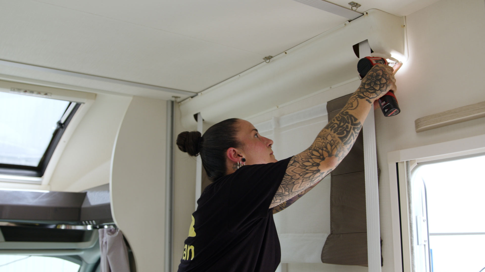

Empresas que arraigan,
territorio que crece
La red de Centros de Servicios Locales para Empresas de la Diputación de Barcelona, con 87 centros distribuidos por toda la provincia, acompaña a emprendedores y empresas desde la idea inicial hasta la consolidación y el crecimiento
Crear una empresa es mucho más que tener una buena idea. Es necesario comprobar que el proyecto es viable, decidir cómo financiarlo, resolver los trámites administrativos y fiscales, encontrar espacios adecuados y, sobre todo, contar con apoyo en los primeros años de actividad. Esta es la función de la red de 87 Centros de Servicios Locales a Empresas (CLSE), promovida por la Diputació de Barcelona junto con los ayuntamientos, consorcios y otras autoridades locales de la provincia. Durante 2025, se crearon cerca de 3.000 empresas con el apoyo de los centros y más de 100.000 emprendedoras y empresarias utilizaron algunos de sus servicios gratuitos.

Vilafranca del Penedès
Maria Mallafré
y Gemma Sala
Fundadoras de IKIGAI,
espacio de crianza y
fotografía infantil
El apoyo suele comenzar antes de que la empresa exista. Gemma Sala y Maria Mallafré fueron claras sobre la idea de Ikigai, un espacio de crianza y fotografía infantil en Vilafranca del Penedès, pero necesitaban saber si la inversión era viable y qué permisos requeriría el proyecto. “La idea estaba clara, pero teníamos dudas sobre la inversión en las instalaciones, la reforma o los permisos. Estábamos un poco perdidas”, explica Gemma Sala.
El análisis de viabilidad es precisamente una de las herramientas que tiene mayor impacto en la posterior consolidación de negocios. Las empresas que han realizado este análisis y han recibido apoyo estructurado tienen una tasa de supervivencia a tres años del 63,7%, frente al 48,7% de las que no lo han hecho.

Otro ejemplo es Shevan, la empresa de caravanas furgonetas que Sílvia Parreño creó en Sabadell. A través de los servicios municipales, accedió al alquiler subvencionado de un almacén industrial, pero primero tuvo que trabajar en el plan de negocio y comprobar su viabilidad. La red cuenta con 1.559 espacios como almacenes, oficinas y espacios de coworking diseñados para facilitar el inicio y crecimiento de nuevos proyectos.
En cuanto a la puesta en funcionamiento, los propios centros responden a las preocupaciones que surgen sobre los procedimientos para constituir la empresa, ya que están autorizados a realizar los formularios legales más comunes de forma electrónica, gratuita y en un plazo de 48 horas, ya que son puntos de Servicio de Emprendimiento

Sabadell
Sílvia Parreño
Fundadora de SHEVAN,
empresa de caravanas
furgonetas
Talento empresarial en todo el territorio
Uno de los valores diferenciales de las CLSE es su implementación territorial. Los servicios especializados no solo se concentran en grandes centros urbanos, sino que también llegan a municipios más pequeños. Daniel García Eril, fundador de la consultoría de proyectos de energías renovables DGE, encontró en el Consorcio Moianès el asesoramiento que necesitaba para resolver cuestiones fiscales, contables y laborales. “Cuando decidí mudarme a Moià, no esperaba encontrar profesionales tan cualificados en un campo tecnológico como el mío. He podido desarrollar un proyecto empresarial que funciona para todos los de Moià”, explica.
Carol Segovia y Biel Pérez, fundadores de Movi, una aplicación que conecta la oferta y la demanda de personal para eventos, también descubrieron servicios especializados en Sant Boi de Llobregat capaces de acompañar proyectos vinculados a la economía digital.

Acompañamiento y formación
Esta red no considera el asesoramiento como una intervención puntual. Como explica Iolanda Repullo (CLSE de Sabadell), “los centros ofrecen itinerarios que pueden combinar formación, asesoramiento individualizado, apoyo para la consolidación y seguimiento de la evolución de la empresa”. Por otro lado, la formación y el desarrollo de competencias es otro de los grandes paquetes de servicios que las CLSE ofrecen a emprendedoras y emprendedores. Según Rosa Figueras, del CLSE de Vilafranca del Penedès, “la formación grupal se combina con asesoramiento individualizado. Básicamente, nos centramos en dos áreas: el modelo de negocio, pero también en la persona, en el desarrollo de las habilidades clave para el emprendimiento”

Granollers
Albert Mascaró
DESCANS MASCARÓ,
fabricante especializado
en equipos de descanso
Crecimiento y garantía de continuidad
Los CLSE no solo trabajan con nuevos negocios. Una parte importante de su actividad se centra en empresas que necesitan transformarse, crecer o afrontar un cambio generacional. Este es el caso de Albert Mascaró. Cuando su padre se jubiló, tenía previsto liquidar el negocio familiar de colchones. El CLSE de Granollers se puso en contacto con él y le ofreció asesoramiento, formación y programas de ayuda. Finalmente, decidió dar continuidad al negocio, modernizarlo y buscar nuevos mercados. Años después, la empresa cuadruplicó su facturación y la plantilla.
Los CLSE ofrecen diferentes programas para apoyar la continuidad del negocio, ya sea poniendo en contacto a empresas viables que buscan continuidad con personas dispuestas a asumir su gestión, haciendo que emprendedores acompañen voluntariamente a trabajadores autónomos y microempresas en la fase de consolidación, así como ayudando a las empresas a diseñar e implementar planes de crecimiento con consultores expertos.
En resumen, desde la creación de una nueva empresa hasta su transformación o transmisión, los Centros de Servicios Empresariales Locales contribuyen a fortalecer un tejido productivo más sólido y distribuido por todo el territorio.
Esta acción de la Diputació de Barcelona responde a los Objetivos de Desarrollo Sostenible (ODS), proclamados por la Asamblea General de las Naciones Unidas en septiembre de 2015 y que forman parte de la Agenda 2030. La Diputación de Barcelona asume su cumplimiento y despliega su acción de apoyo a los gobiernos locales de la provincia de acuerdo con estos ODS.
Créditos
Producción: Edicions Clariana Coordinación: Martí Palma Diseño: Marta Sagarra Maquetación: Enric Abad Fotografías: Diputació de Barcelona
Un proyecto de Brandslab. Godó Nexus